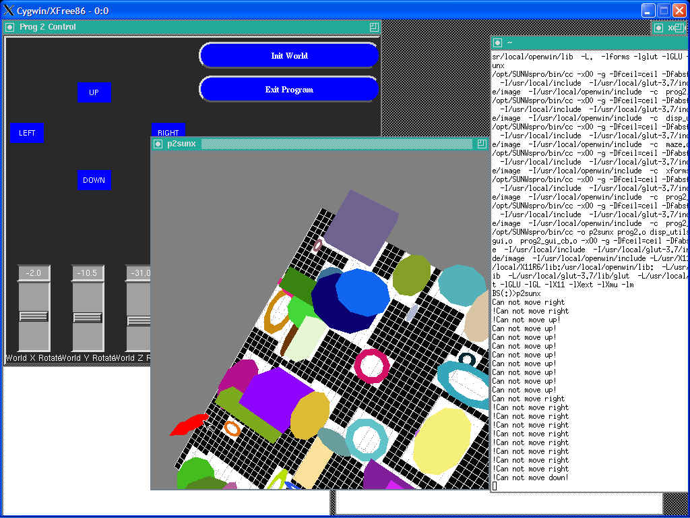

Jason Brody-Stewart Programming assignment 2
Purpose-To write a game that requires you to draw objects in a 3d world.
Main files-disp_utils.c, formd.c, Makefile, maze.c, prog2.c, prog2_gui.c, prog2_gui.fd, pro2_gui_cb.c, xforms_utils.c
disp_utils.c-Makes all the openGL calls does the actual drawing.
formd.c-File used by fdesign to create gui.
Makefile-File used to compile the program. Must be in the following syntax [make sun_xforms].
maze.c-File were all world manipulations are done. This is where I wrote the procedures that the buttons called in order to do the various tasks on the world.
prog2.c-File where the program runs from. Does any reading of argument passed in order to change the window size. It also starts up xforms and Glut.
prog2_gui.c-gui generated with fdesign
prog2_gui.fd-file used by fdesign to create gui
prog2_gui_cb.c-file that contains the calls to perform tasks that your buttons should perform.
xforms_utils.c-file where all your xforms stuff is done.
Running Program To compile my game type "make". To run my game type "p2sunx". My game works like so. You click init maze untill you are satisfied with a playable grid of to walk through. Some times you start on top of an object hence you are crushed and can not move in any direction. Then you can use the gui buttons to move across the grid or you can use arrow keys. In order to use the arrow keys you have to have the window selected. You step through the world and when you come up to a object and try to move through it you will it wont let you and it will print out can not move that direction. So then you try a different direction. If you can not move then you push int world and start over. Every time you move across it randomly selects a spot on the grid that is not a wall and puts a object there. I make a object struct to store all the infomation about each object and I also have a array of objects to keep track on where they are. In the construction of the objects that is where all random generation is done. Basically I started with the old program and built on it. I also figured out a way to make the cb file shorter, by having buttons share the same call back.
Problems I was trying to make an animation when you win the game, but for some reason I could not get the shapes to move with out sliding the sliders around. It seems that the only way to animate is to change stuff in redraw maze. I ran out of time tying to figure this out.
